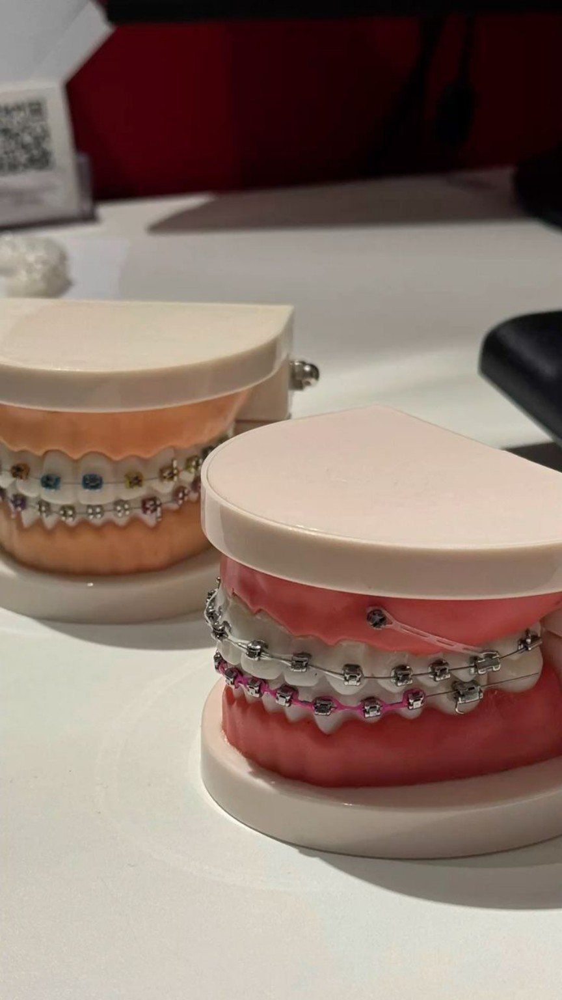
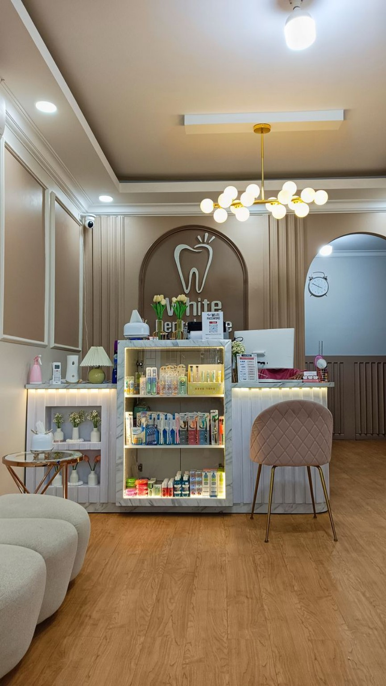
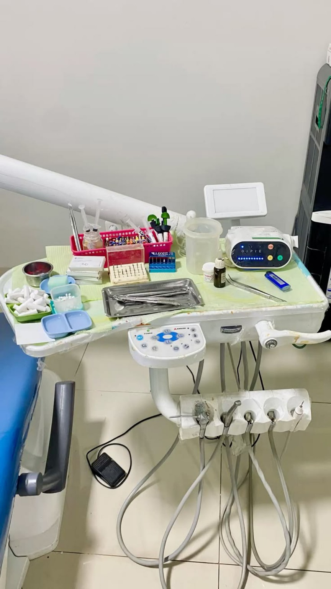
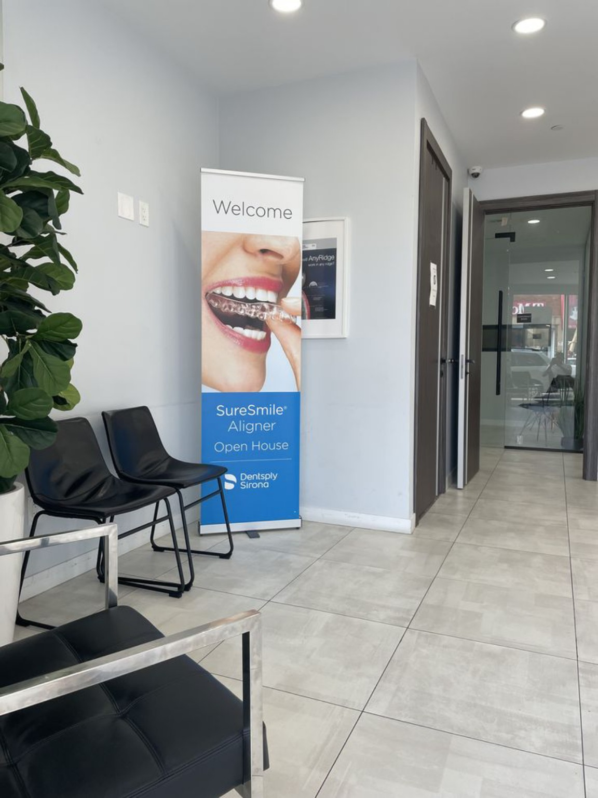
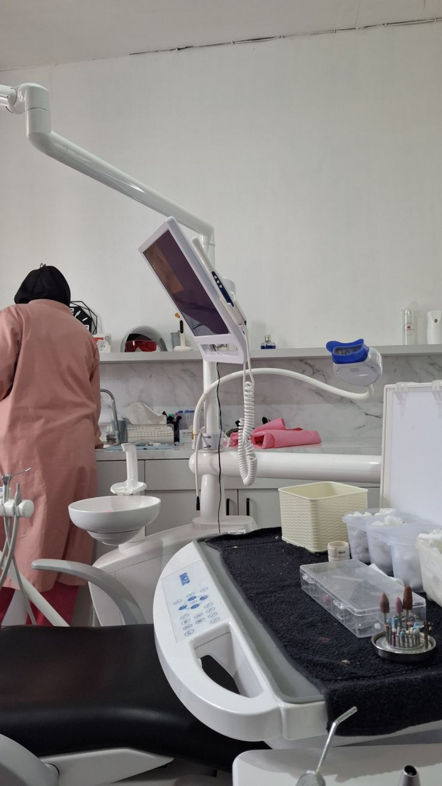
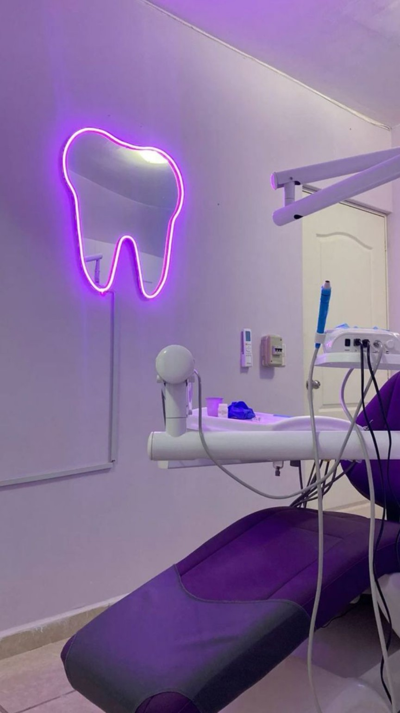
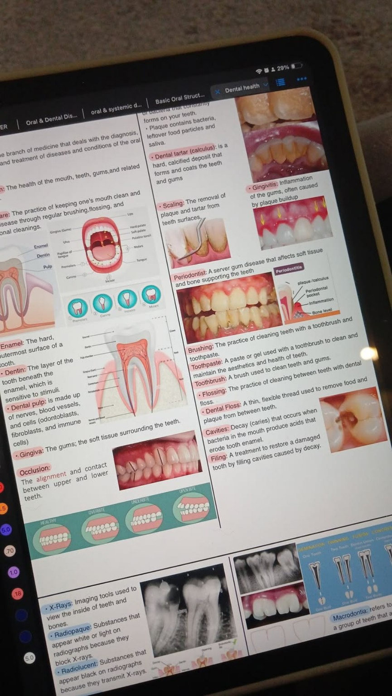

01
Behel Gigi
Perawatan ortodonti untuk membantu merapikan susunan gigi.

RAWAT SENYUM, RAWAT PERCAYA DIRI.
Perawatan gigi modern dengan pelayanan nyaman, profesional, dan terpercaya.
Booking Sekarang →Kami menyediakan berbagai pilihan perawatan gigi dan mulut dengan pelayanan yang nyaman, profesional, dan disesuaikan dengan kebutuhan setiap pasien.
Kami percaya bahwa perawatan gigi bukan hanya tentang kesehatan, tetapi juga tentang kenyamanan dan kepercayaan diri.
Audry Dental menghadirkan pelayanan yang ramah, lingkungan yang nyaman, serta berbagai pilihan perawatan dalam satu tempat.
Suasana klinik bersih dan nyaman untuk membantu pasien merasa tenang.
Perawatan dilakukan dengan pendekatan profesional sesuai kebutuhan pasien.
Berbagai pilihan layanan dental tersedia dalam satu tempat.
Kami mengutamakan kenyamanan dan pengalaman setiap pasien.
Pilih perawatan yang sesuai dengan kebutuhanmu dan temukan layanan Audry Dental.
Perawatan ortodonti untuk membantu merapikan susunan gigi.
Membantu membuat warna gigi tampak lebih cerah.
Solusi untuk membantu menggantikan gigi yang hilang.
Perawatan gusi sesuai kebutuhan pasien.
Pilihan perawatan untuk membantu menggantikan gigi yang hilang.
Penanganan gigi bungsu sesuai kondisi pasien.
Membantu memperbaiki gigi yang rusak.
Perawatan bagian dalam gigi sesuai kondisi pasien.
Pemeriksaan pencitraan untuk membantu melihat kondisi gigi.
Pembersihan plak dan karang gigi secara profesional.
Perawatan permukaan gigi untuk membantu tampilan senyum.
OUR CLINIC
Lingkungan klinik yang bersih, nyaman, dan didukung fasilitas perawatan modern.





OUR DENTIST
Dokter gigi profesional yang siap membantu memberikan perawatan sesuai kebutuhanmu dengan pelayanan yang nyaman dan ramah.
Buat AppointmentFACILITIES
Ruang perawatan nyaman dan bersih.
Peralatan pendukung pelayanan dental.
Pengalaman pasien menjadi bagian penting dari pelayanan kami.
Nikmati penawaran spesial dari Audry Dental untuk pilihan perawatan tertentu.
Booking Sekarang →APPOINTMENT
Isi data berikut untuk membuat janji perawatan di Audry Dental.